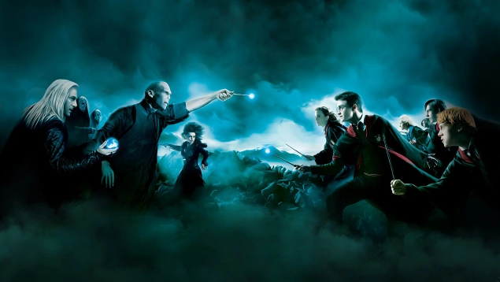

El Enfrentamiento Final
La Batalla de Hogwarts marcó el final de la lucha entre el bien y el mal en el mundo mágico. Fue aquí donde Harry Potter y sus aliados enfrentaron al temido Voldemort y sus mortífagos. Con sacrificios, coraje y magia, los héroes se alzaron para proteger su hogar y defender lo que es correcto.
